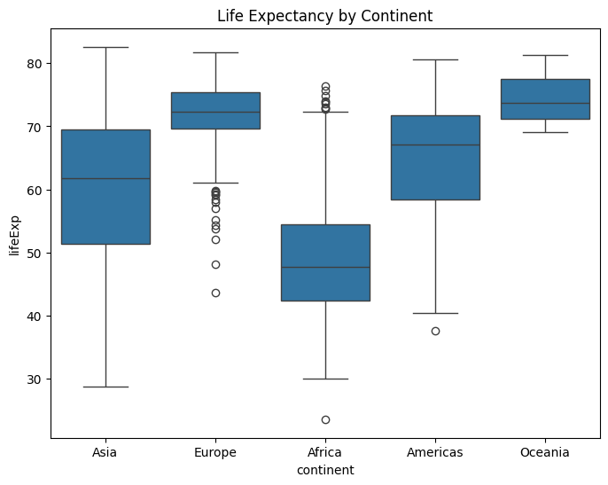
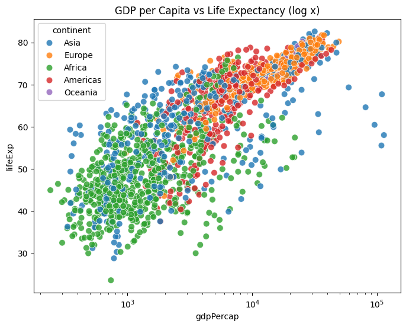
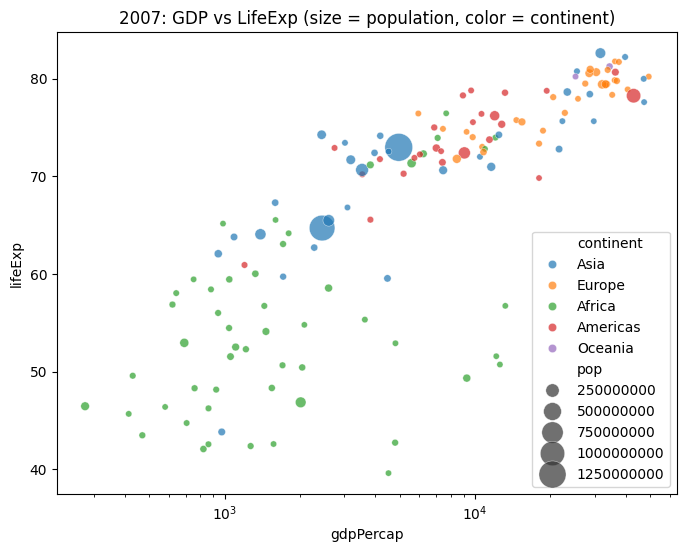
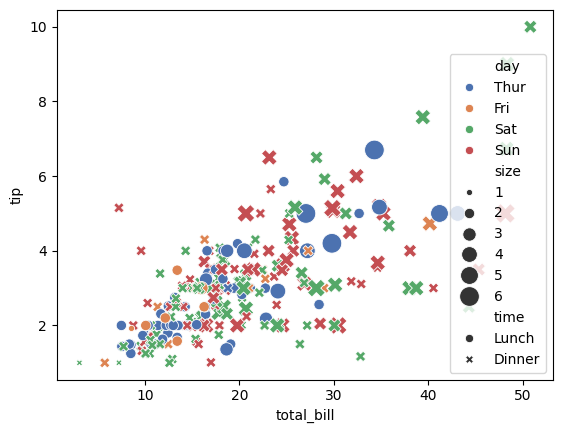
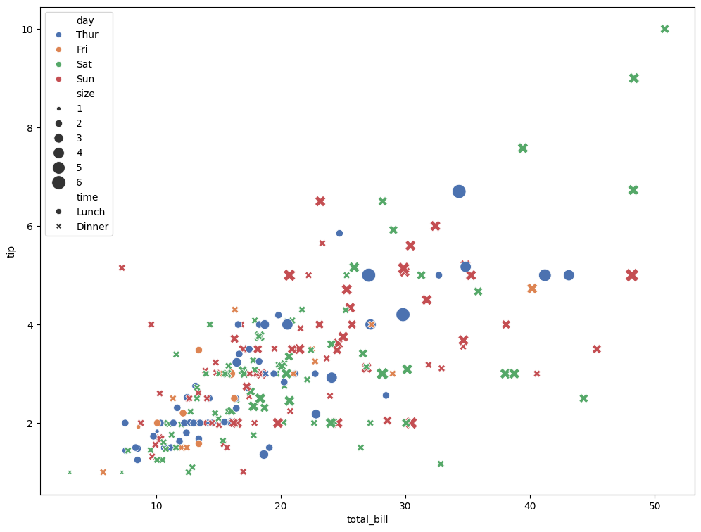
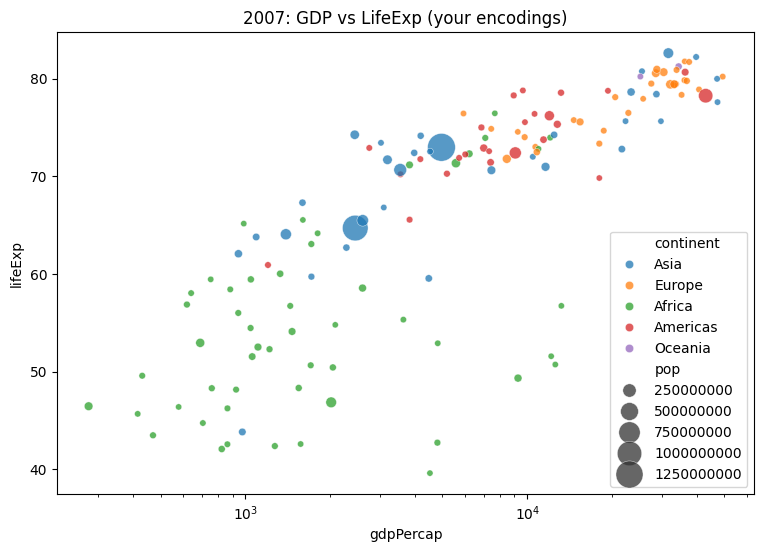
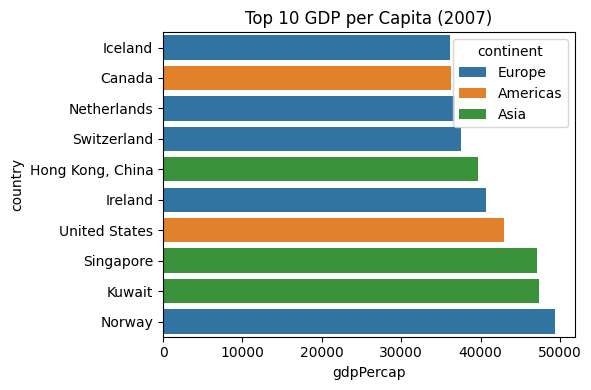

import seaborn as sns
import pandas as pdHands-on session for Week 2
DATS 2102 – Week 2: Language of Graphs
Session 2 Hands‑On: Seaborn (Categorical vs Continuous) + Altair (Grammar of Graphics)
Learning objectives - Apply tidy data reshaping to prepare data for plotting - Load the Gapminder dataset and perform a quick EDA - Use Seaborn for categorical vs. continuous plots - Use Altair for a declarative grammar of graphics and interactivity - Practice multiple encodings (color, size, shape) and reflect on readability
1) Setup
pip install pandas numpy matplotlib seaborn altair plotly
2) Tidy Reshaping (pd.melt)
Demo for converting messy data/dataframe into tidy data/dataframe Please refer to the details of the pandas melt function here: https://pandas.pydata.org/docs/reference/api/pandas.melt.html
messy_data = pd.DataFrame({
"Country": ["USA", "China", "UK"],
"2000": [280, 1260, 59],
"2005": [295, 1320, 60],
"2010": [310, 1390, 63]
})
display(messy_data)
print(messy_data)
messy_data| Country | 2000 | 2005 | 2010 | |
|---|---|---|---|---|
| 0 | USA | 280 | 295 | 310 |
| 1 | China | 1260 | 1320 | 1390 |
| 2 | UK | 59 | 60 | 63 |
Country 2000 2005 2010
0 USA 280 295 310
1 China 1260 1320 1390
2 UK 59 60 63| Country | 2000 | 2005 | 2010 | |
|---|---|---|---|---|
| 0 | USA | 280 | 295 | 310 |
| 1 | China | 1260 | 1320 | 1390 |
| 2 | UK | 59 | 60 | 63 |
tidy_data = messy_data.melt(id_vars='Country', value_vars=['2000', '2005','2010'], var_name='Year', value_name='Population')
##make a tiny wide table and reshape it to long
tidy_data['Year'] = tidy_data['Year'].astype(int)
tidy_data| Country | Year | Population | |
|---|---|---|---|
| 0 | USA | 2000 | 280 |
| 1 | China | 2000 | 1260 |
| 2 | UK | 2000 | 59 |
| 3 | USA | 2005 | 295 |
| 4 | China | 2005 | 1320 |
| 5 | UK | 2005 | 60 |
| 6 | USA | 2010 | 310 |
| 7 | China | 2010 | 1390 |
| 8 | UK | 2010 | 63 |
One more example
df_wide = pd.DataFrame({
'name': ['Alice', 'Bob'],
'math': [90, 80],
'english': [85, 78]
})df_tidy = df_wide.melt(id_vars='name', var_name='subject', value_name='score')Load Gapminder dataset
We can use the one from Plotly’s GitHub for this session https://raw.githubusercontent.com/plotly/datasets/master/gapminderDataFiveYear.csv
##load the dataset
url = "https://raw.githubusercontent.com/plotly/datasets/master/gapminderDataFiveYear.csv"
gapminder = pd.read_csv(url)
gapminder.head()| country | year | pop | continent | lifeExp | gdpPercap | |
|---|---|---|---|---|---|---|
| 0 | Afghanistan | 1952 | 8425333.0 | Asia | 28.801 | 779.445314 |
| 1 | Afghanistan | 1957 | 9240934.0 | Asia | 30.332 | 820.853030 |
| 2 | Afghanistan | 1962 | 10267083.0 | Asia | 31.997 | 853.100710 |
| 3 | Afghanistan | 1967 | 11537966.0 | Asia | 34.020 | 836.197138 |
| 4 | Afghanistan | 1972 | 13079460.0 | Asia | 36.088 | 739.981106 |
3) Quick EDA
gapminder.info()<class 'pandas.core.frame.DataFrame'>
RangeIndex: 1704 entries, 0 to 1703
Data columns (total 6 columns):
# Column Non-Null Count Dtype
--- ------ -------------- -----
0 country 1704 non-null object
1 year 1704 non-null int64
2 pop 1704 non-null float64
3 continent 1704 non-null object
4 lifeExp 1704 non-null float64
5 gdpPercap 1704 non-null float64
dtypes: float64(3), int64(1), object(2)
memory usage: 80.0+ KBgapminder.describe(include='all').T.head(10)| count | unique | top | freq | mean | std | min | 25% | 50% | 75% | max | |
|---|---|---|---|---|---|---|---|---|---|---|---|
| country | 1704 | 142 | Afghanistan | 12 | NaN | NaN | NaN | NaN | NaN | NaN | NaN |
| year | 1704.0 | NaN | NaN | NaN | 1979.5 | 17.26533 | 1952.0 | 1965.75 | 1979.5 | 1993.25 | 2007.0 |
| pop | 1704.0 | NaN | NaN | NaN | 29601212.325117 | 106157896.746828 | 60011.0 | 2793664.0 | 7023595.5 | 19585221.75 | 1318683096.0 |
| continent | 1704 | 5 | Africa | 624 | NaN | NaN | NaN | NaN | NaN | NaN | NaN |
| lifeExp | 1704.0 | NaN | NaN | NaN | 59.474439 | 12.917107 | 23.599 | 48.198 | 60.7125 | 70.8455 | 82.603 |
| gdpPercap | 1704.0 | NaN | NaN | NaN | 7215.327081 | 9857.454543 | 241.165876 | 1202.060309 | 3531.846988 | 9325.462346 | 113523.1329 |
sorted(gapminder['year'].unique())[:10], gapminder['continent'].unique()([np.int64(1952),
np.int64(1957),
np.int64(1962),
np.int64(1967),
np.int64(1972),
np.int64(1977),
np.int64(1982),
np.int64(1987),
np.int64(1992),
np.int64(1997)],
array(['Asia', 'Europe', 'Africa', 'Americas', 'Oceania'], dtype=object))4) Seaborn: Categorical vs Continuous
import seaborn as sns
import matplotlib.pyplot as plt
# Categorical example: life expectancy by continent (boxplot)
plt.figure(figsize=(8,6))
sns.boxplot(x="continent", y="lifeExp", data=gapminder)
plt.title("Life Expectancy by Continent")
plt.show()
# Continuous example: GDP vs Life Expectancy (scatter; hue = continent)
plt.figure(figsize=(8,6))
sns.scatterplot(x="gdpPercap", y="lifeExp", hue="continent", data=gapminder, s=60, alpha=0.8)
plt.xscale("log")
plt.title("GDP per Capita vs Life Expectancy (log x)")
plt.show()

5) Seaborn: Multiple Encodings
Example 1
# Use size to encode population; hue for continent
plt.figure(figsize=(8,6))
sns.scatterplot(
x="gdpPercap", y="lifeExp",
size="pop", hue="continent",
data=gapminder[gapminder['year']==2007],
sizes=(20, 400), alpha=0.7
)
plt.xscale("log")
plt.title("2007: GDP vs LifeExp (size = population, color = continent)")
plt.show()
Example 2
# Load tips dataset
tips = sns.load_dataset("tips")
tips.head()| total_bill | tip | sex | smoker | day | time | size | |
|---|---|---|---|---|---|---|---|
| 0 | 16.99 | 1.01 | Female | No | Sun | Dinner | 2 |
| 1 | 10.34 | 1.66 | Male | No | Sun | Dinner | 3 |
| 2 | 21.01 | 3.50 | Male | No | Sun | Dinner | 3 |
| 3 | 23.68 | 3.31 | Male | No | Sun | Dinner | 2 |
| 4 | 24.59 | 3.61 | Female | No | Sun | Dinner | 4 |
sns.scatterplot(data=tips,x="total_bill",
y="tip",
hue="day",
style="time",
size="size",
palette="deep",
sizes=(20, 200))
plt.figure(figsize=(12,9))
sns.scatterplot(data=tips,x="total_bill",
y="tip",
hue="day",
style="time",
size="size",
palette="deep",
sizes=(20, 200))
# plt.xscale("log")
plt.show()
6) Altair: Grammar of Graphics + Interactivity
import altair as alt
alt.Chart(gapminder).mark_circle().encode(
x='gdpPercap:Q',
y='lifeExp:Q',
color='continent:N',
size='pop:Q',
tooltip=['country','year','lifeExp','gdpPercap']
).interactive()import altair as alt
# Make charts renderable in notebooks
alt.data_transformers.disable_max_rows()
base = alt.Chart(gapminder).mark_circle().encode(
x=alt.X('gdpPercap:Q', scale=alt.Scale(type='log')),
y='lifeExp:Q',
color='continent:N',
size=alt.Size('pop:Q', title='Population'),
tooltip=['country:N','continent:N','year:O','lifeExp:Q','gdpPercap:Q','pop:Q']
).properties(width=600, height=480)
base.interactive()Altair’s Grammar of Graphics
Altair Type Shorthands
Each variable you encode in Altair must declare its data type. There are four main types:
Q = Quantitative
Numeric, continuous values (GDP, population, life expectancy)
Example: x=‘gdpPercap:Q’ → treat GDP per capita as a number with a continuous scale.
N = Nominal
Categorical, unordered labels (continent, country names, gender)
Example: color=‘continent:N’ → treat continent as categories, map to distinct colors.
O = Ordinal
Ordered categories (education levels, small/medium/large, survey responses 1–5)
Example: x=‘year:O’ if you want to treat years as ordered categories instead of continuous.
T = Temporal
Time/date values (year, month, datetime)
Example: x=‘year:T’ → treat year as a time axis.
Altair Selections (Brush + Filter)
brush = alt.selection_interval(encodings=['x','y'])
points = alt.Chart(gapminder).mark_point().encode(
x=alt.X('gdpPercap:Q', scale=alt.Scale(type='log'), title='GDP per Capita (log)'),
y=alt.Y('lifeExp:Q', title='Life Expectancy'),
color=alt.condition(brush, 'continent:N', alt.value('lightgray')),
tooltip=['country','year','lifeExp','gdpPercap','pop']
).add_params(brush).properties(width=350, height=280)
hist = alt.Chart(gapminder).mark_bar().encode(
x=alt.X('lifeExp:Q', bin=alt.Bin(maxbins=30)),
y='count()',
color='continent:N'
).transform_filter(brush).properties(width=350, height=280)
(points | hist)7) Guided Exercise
Create a chart with multiple encodings using gapminder[gapminder['year'] == 2007]: - x = GDP per capita (log) - y = Life expectancy - color = continent - size = population
Questions to reflect on: - Which encoding contributes most to readability? - Is any encoding redundant or distracting? - Try swapping encodings (e.g., shape for continent, size for GDP).
year_df = gapminder[gapminder['year'] == 2007].copy()
# TODO: your plot here (Seaborn or Altair)
# Example scaffold (Seaborn):
import seaborn as sns, matplotlib.pyplot as plt
plt.figure(figsize=(9,6))
sns.scatterplot(
x="gdpPercap", y="lifeExp",
hue="continent", size="pop",
data=year_df, sizes=(20, 400), alpha=0.75
)
plt.xscale("log")
plt.title("2007: GDP vs LifeExp (your encodings)")
plt.show()
8) Challenges 1
- Starting from
gapminder, compute the top 10 countries by GDP per capita in 2007. - Make an Altair bar chart with tooltips.
- Then switch to Seaborn and try a horizontal bar chart.
- Reflect: which was faster to write and more readable?
top10_2007 = (
gapminder[gapminder['year']==2007]
.nlargest(10, 'gdpPercap')
.sort_values('gdpPercap')
)
top10_2007[['country','continent','gdpPercap']].head()| country | continent | gdpPercap | |
|---|---|---|---|
| 695 | Iceland | Europe | 36180.78919 |
| 251 | Canada | Americas | 36319.23501 |
| 1091 | Netherlands | Europe | 36797.93332 |
| 1487 | Switzerland | Europe | 37506.41907 |
| 671 | Hong Kong, China | Asia | 39724.97867 |
import altair as alt
alt.Chart(top10_2007).mark_bar().encode(
x=alt.X('gdpPercap:Q', title='GDP per Capita'),
y=alt.Y('country:N', sort='x'),
color='continent:N',
tooltip=['country','continent','gdpPercap']
).properties(width=450, height=300)
import seaborn as sns, matplotlib.pyplot as plt
plt.figure(figsize=(6,4))
sns.barplot(y='country', x='gdpPercap', hue='continent', data=top10_2007, dodge=False)
plt.title('Top 10 GDP per Capita (2007)')
plt.tight_layout()
plt.show()
8) Challenges 2
- A scatterplot of GDP per capita vs. life expectancy using plotly
- Encode continent as color and year as an animation frame.
- What does each encoding reveal?
- Which encoding is most effective at showing inequality?
- How does animation enhance or hinder interpretation?
import plotly.express as px
import plotly.io as pio
pio.renderers.default = 'plotly_mimetype+notebook_connected'
gap = px.data.gapminder()
px.scatter(
gap, x="gdpPercap", y="lifeExp",
color="continent", size="pop",
hover_name="country", animation_frame="year",
log_x=True)